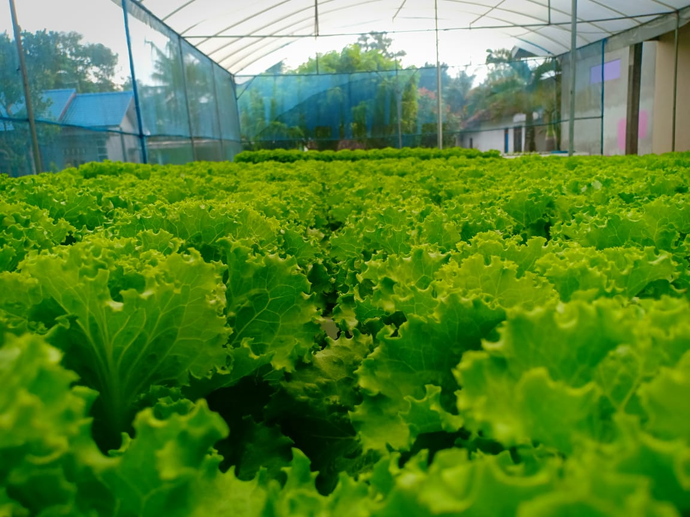

Program Unggulan
Kebun Hidroponik Kalijoho
Salah satu warga memanfaatkan sistem hidroponik untuk menanam sayuran secara efisien, mendukung ketahanan pangan sekaligus penghijauan lingkungan. Selain itu, pemanfaatan pekarangan untuk pertanian ini ternyata bisa meningkatkan perekonomian bagi pelaku usaha karena memperoleh hasil yang sangat menguntungkan.